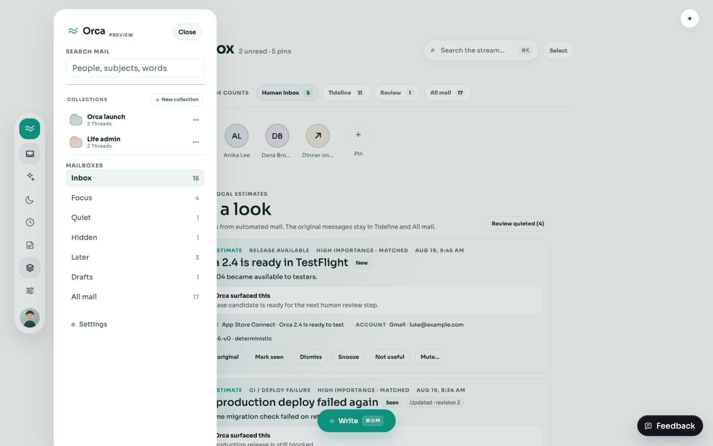

Deep module path
REST session adapterOrganization scope gateCollections/Pins moduleSQLite transaction + auditPure web view models
The existing BRE-308 Organization Workspace/module/repository files remain untouched. BRE-309 adds a sibling module with narrow contracts so BRE-310 can evolve Facets and Workflow independently.
Behavior matrix
| Invariant | Evidence | Status |
|---|---|---|
| Collection ≠ View | membership.type = explicit_threads; wire contract carries Thread IDs, never a query. | PASS |
| Pin stability | Discriminated target is queryId or { family, id }; serialized UI state is rejected. | PASS |
| Existing data | 0024_organization_collections_pins.sql backfills legacy filter Pins to saved-query IDs while retaining their definition. | PASS |
| Audit + undo | Apply and revert are atomic; audit facts are append-only; revert creates a compensating entry. | PASS |
| Account isolation | Scope and query Account IDs are intersected with Workspace ownership; cross-Account membership fails closed. | PASS |
| Authority | Describe reports sendMail:false and deleteProviderMail:false; contracts contain no provider names. | PASS |
Reviewable operations
Describe
GET /v1/organization/collections-pins/describeDistinct semantics, enabled operations, safe authority.
Query
GET /v1/organization/collections-pins/queryWorkspace result with explicit accountId context and optional Account/Collection/Thread filters.
Apply
POST /v1/organization/collections-pins/applyCollection lifecycle/membership, saved query identity, and Pin shortcut changes with idempotency.
Revert + audit
POST .../revertGET .../auditCompensating changes and immutable actor/reason/before/after facts.
Existing Orca visual direction

Cross-ticket visual finding: the baseline Orca Black drawer rendered Collection titles with insufficient contrast. BRE-326 owns the desktop UI switch, fixed the shared selectors with
var(--orca-ink), and reported zero axe WCAG A/AA violations on its dark organizer. BRE-309 retains the baseline screenshot as evidence and intentionally does not duplicate BRE-326's shared UI changes.Verification commands
bun run typecheck bun run test bun run build bun run lint git diff --check # focused behavioral evidence bun test packages/shared/src/organization-collections-pins.test.ts \ apps/api/src/organization/collections-pins/module.test.ts \ apps/api/src/organization/collections-pins/migration.test.ts \ apps/api/src/organization/collections-pins/routes.test.ts \ apps/web/src/collections-pins.test.ts